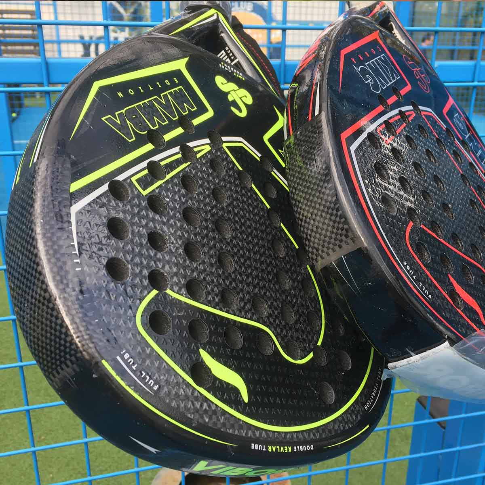

Spedizione A/R 8 €
Puoi inviare la racchetta da tutta Italia con modalità concordate prima del lavoro.
Invia le foto su WhatsApp: valutiamo danno, tempi e costo prima di intervenire. Lavoriamo a Roma e gestiamo spedizioni in tutta Italia.
Vantaggi
Costi, tempi e spedizione vengono definiti prima del lavoro. Tu sai cosa succede, noi pensiamo alla racchetta.
Puoi inviare la racchetta da tutta Italia con modalità concordate prima del lavoro.
Ogni lavorazione viene consegnata con garanzia chiara e indicazioni per proteggerla.
Dalla ricezione alla riconsegna, l’obiettivo è farti rientrare in campo il prima possibile.
Ogni pala viene trattata a mano, con materiali tecnici e finiture curate.
Servizi
Riparapadel interviene su struttura, estetica e impugnatura con un metodo diretto: foto su WhatsApp, valutazione chiara, lavoro tecnico.
Crepe, bordi, piatto e telaio
Interventi tecnici su crepe, rotture e danni strutturali per recuperare solidità e controllo.
Stile, protezione, identità
Colori, dettagli e finiture su misura per rendere la racchetta più personale e riconoscibile.
Ricetta esclusiva Riparapadel
Eseguiamo la grippatura della tua racchetta da padel con una ricetta esclusiva, studiata per migliorare presa, comfort e controllo.
Set-up e richieste su misura
Soluzioni dedicate per manici, interventi complessi, riparazioni multiple e richieste fuori standard.
Come funziona
Invia le foto, ricevi una valutazione, scegli consegna o spedizione. Poi lavoriamo noi e la racchetta torna pronta per giocare.
Prepara 4 foto: fronte, retro, bordo completo e dettaglio del danno. Bastano pochi scatti fatti bene per partire nel modo giusto.
Mostra fronte, retro, bordo e dettaglio del danno. Più le foto sono chiare, più la valutazione è precisa.
Analizziamo la racchetta, ti diciamo se conviene intervenire e comunichiamo costi e tempi.
Puoi consegnare a Roma oppure concordare la spedizione della racchetta da tutta Italia.
Interveniamo con materiali tecnici, cura artigianale e controllo finale prima della riconsegna.
La racchetta torna pronta per il campo, con indicazioni semplici per proteggere il lavoro.
Gallery lavori
Riparazioni piccole e grandi, lavori multipli, personalizzazioni, grippature e manici: ogni area raccoglie esempi reali dal laboratorio Riparapadel.


Interventi mirati su danni contenuti, con finitura pulita e controllo della zona riparata.
Apri collezione


Riparazioni strutturali per racchette con danni importanti, sempre valutate prima da foto.
Apri collezione


Quando la racchetta presenta più danni, il lavoro viene pianificato per recuperare struttura e durata.
Apri collezione


Colori, scritte, finiture e dettagli su misura per una racchetta riconoscibile e curata.
Apri collezione


Trattamento del piatto con ricetta esclusiva per migliorare presa, effetto e controllo sul colpo.
Apri collezione


Interventi su manici, impugnature e rinforzi quando il problema nasce dalla presa o dalla struttura.
Apri collezionePerché scegliere Riparapadel
Una racchetta riparata bene deve essere solida, pulita e coerente con il tuo gioco. Per questo ogni intervento parte da una valutazione reale.
Se una riparazione non conviene, viene detto subito. Prima viene la racchetta, poi il lavoro.
Ogni intervento considera danno, telaio, peso e resa in campo. Nulla viene fatto a caso.
Parli direttamente con chi mette mano alla racchetta. Meno passaggi, più chiarezza.
Il servizio nasce tra campo e laboratorio: durata, estetica e feeling devono lavorare insieme.
Chi sono
Riparapadel nasce da una passione concreta: recuperare racchette da padel danneggiate senza snaturare peso, risposta e feeling in campo.
Sono Massimiliano Raybaudi Massilia. Ho creato Riparapadel per dare ai giocatori un punto di riferimento tecnico, diretto e affidabile per riparare, personalizzare e migliorare la propria racchetta.
L’esperienza sui materiali compositi e la cura manuale del dettaglio permettono di scegliere il lavoro giusto per ogni pala. Il risultato deve essere solido, pulito e coerente con il modo in cui giochi.
Parla con Massimiliano
FAQ
Prezzi, tempi e fattibilità dipendono dal danno. Con le foto su WhatsApp possiamo darti una risposta concreta fin dal primo contatto.
Non trovi la risposta giusta? Invia foto e dettagli della racchetta: è il modo più veloce per ricevere una valutazione precisa.
Dipende da zona, estensione del danno e tipo di finitura. Invia le foto su WhatsApp e ricevi una prima valutazione chiara prima di procedere.
Conviene quando il danno è localizzato e la racchetta ha ancora valore tecnico. Se non vale la pena intervenire, lo diciamo subito.
Riparazioni e grippature vengono gestite in tempi rapidi dalla ricezione. Le personalizzazioni possono richiedere qualche giorno in più.
Sì. Puoi spedire da tutta Italia. Prima dell’invio ricevi le indicazioni per imballare correttamente la racchetta.
L’intervento viene eseguito cercando di preservare feeling e maneggevolezza. Se può esserci una variazione sensibile, viene comunicata prima.
Sì. Possiamo valutare grafiche, colori, dettagli estetici e finiture su misura. Il progetto viene definito prima del lavoro.
Eseguiamo la grippatura della racchetta da padel con una ricetta esclusiva, adattata alla sensazione che vuoi in mano: più presa, più comfort e più controllo.
Le lavorazioni hanno garanzia di 4 mesi dalla consegna. Restano escluse nuove rotture causate da urti, impatti o uso non corretto.
Preventivo via WhatsApp
Valutazione via WhatsApp, consegna a Roma o spedizione da tutta Italia. Risposta chiara, lavoro tecnico, racchetta pronta per tornare in campo.
Invia foto su WhatsApp